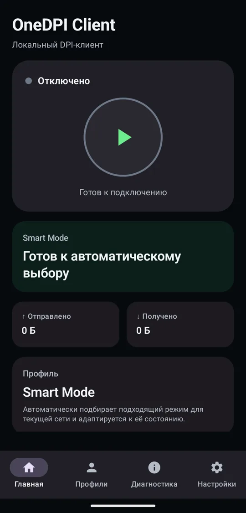
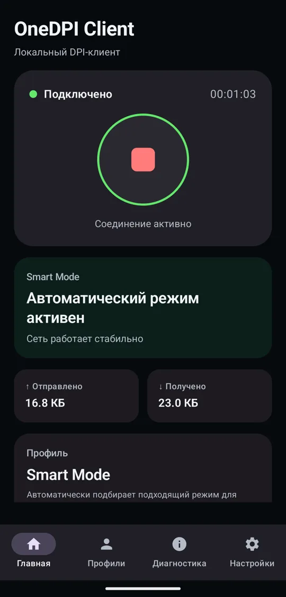
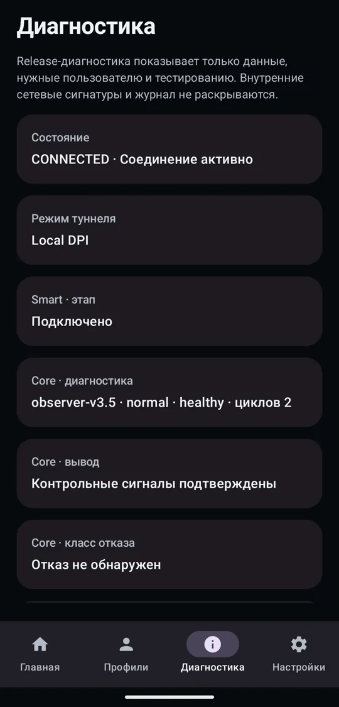
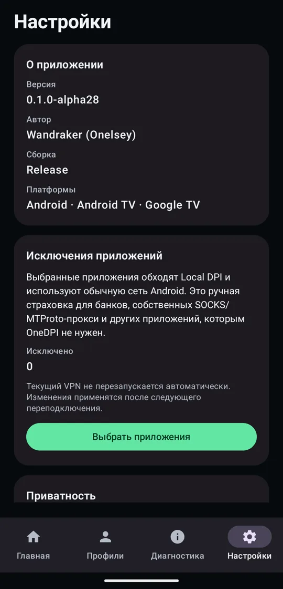

Обходит блокировки прямо на телефоне. Без серверов, без аккаунта и без настройки: нажал «Подключить», и приложение само подбирает способ под твою сеть.
Android 7.0 и новее, телефоны и Android TV. Бесплатно.
Что видит провайдер
Фильтр провайдера читает начало каждого соединения и ищет там адрес сайта. OneDPI нарезает это начало так, чтобы фильтр не смог его прочитать, а сайт получил всё как обычно.
Честно о возможностях
Локальный обход хорош против одного вида блокировок. Против остальных нужен внешний сервер, и приложение не будет делать вид, что это не так.
Помогает
- Сайты и YouTube, которые провайдер режет по содержимому соединения.
- Разные сети. Smart подбирает способ отдельно для домашнего Wi-Fi и для мобильной сети и запоминает его.
- Приватность. Весь трафик обрабатывается на телефоне. Нет нашего сервера, нет аккаунта, нет телеметрии.
- Исключения. Банки и другие приложения можно пустить мимо OneDPI.
Не поможет
- Блокировка по адресу. Если до серверов не доходит ни один пакет, менять нечего. Так у многих операторов сейчас с Telegram.
- Белые списки на мобильной сети, когда разрешено только заранее одобренное.
- Замедление целых подсетей. Скорость от провайдера локально не вернуть.
Одна кнопка
Главный экран для того, чтобы включить и забыть. Подробности — на вкладке диагностики, если интересно, что происходит с сетью.




Как росло приложение
Каждая версия выходила после отзывов тестировщиков из России и Казахстана. Сверху — то, что сейчас, внизу — самое начало.
-
alpha01–02Начало
Первые сборки. Записей о них почти не осталось. Дальше всё до alpha28 вышло за одиннадцать дней.
-
alpha03Заработала основа
Впервые собралась вся связка: телефон пропускает трафик через встроенный ByeDPI, и это работает на настоящем Android.
-
alpha04Аккуратная остановка
Кнопка «Отключить» стала работать чисто, без зависших состояний. Появилась первая диагностика.
-
alpha05–08Рождение Smart
Приложение научилось само перебирать способы обхода, оценивать результат и помнить, что сработало.
-
alpha09–10Своя стратегия для каждой сети
Smart запоминает лучший способ отдельно для Wi-Fi и мобильной сети, учитывает разные сервисы и со временем переучивается.
-
alpha11Пропала сеть — это не поломка
Если интернета нет совсем, приложение ждёт его, а не считает способ обхода плохим. Smart больше не «разучивается» в метро.
-
alpha12Свой VPN как запасной вариант
Можно подключить собственный WireGuard-сервер. Ключи хранятся на телефоне в зашифрованном виде. Пока экспериментально.
-
alpha13Проверяем сервисы по отдельности
Smart проверяет не только сайты, но и видео, веб-мессенджеры и сам протокол Telegram. Проверки идут параллельно, подбор стал быстрее.
-
alpha14Готово для тестировщиков
Первая подписанная сборка для раздачи. Технические подробности скрыты, уведомления ничего лишнего о сети не показывают.
-
alpha15Первые отзывы из России
Telegram то появлялся, то пропадал. Теперь приложение проверяет его несколько раз подряд и отличает «плохо» от «совсем нет».
-
alpha16Неудачный эксперимент
Попробовали пустить весь трафик через отдельный маршрут ради Telegram. Начались сбои, даже там, где всё работало. Урок усвоен: эксперименты не ставим на пути всего трафика.
-
alpha17Назад к проверенной схеме
Вернули прямой путь: телефон, ByeDPI, интернет. Стабильность важнее эксперимента.
-
alpha18Сначала смотреть, потом лечить
Появилось ядро диагностики, которое только наблюдает. Искусственные проверки иногда говорили «всё сломано», когда трафик шёл, и действовать по ним было опасно.
-
alpha19–21Где именно рвётся
Диагностика различает, на каком шаге ломается соединение: поиск адреса, подключение, шифрование или сам сервис.
-
alpha22Меньше ложных тревог
Приложение отдельно считает отправленное и полученное. Мелкие изменения в той же сети больше не вызывают перезапуск.
-
alpha23Android TV
Управление пультом на Android TV и Google TV: одна кнопка доступна сразу.
-
alpha24Каким проверкам верить
Проверки видео и веб-мессенджеров часто расходились с реальностью, их сделали вспомогательными. Появились исключения приложений.
-
alpha25–26Первое самовосстановление
Если Telegram пропадал, приложение могло само попробовать другой способ и откатить его, если стало хуже. И научилось распознавать, когда Telegram заблокирован по адресу.
-
alpha27Обходной путь для Telegram
Проверили отдельный путь для Telegram с обязательной проверкой и откатом. Откаты сработали, Telegram — нет: блокировка по адресу локально не обходится.
-
alpha28Надёжностьтекущая
Если что-то пошло не так во время восстановления, приложение возвращается к рабочему состоянию. Неудачная попытка не повторяется сутки. DNS берётся от твоей сети, а не навязывается чужой.
-
паузаСентябрь и октябрь
Проект стоял. alpha28 оставалась рабочей версией у тестировщиков.
-
дальшеСтабильный YouTube и сайтыв работе с ноября
Без обрывов при переключении Wi-Fi и мобильной сети, меньше лишних пересканирований, отдельная проверка видео. Ядро приложения уже разобрано на части и покрыто автотестами, чтобы новые версии не ломали старое.